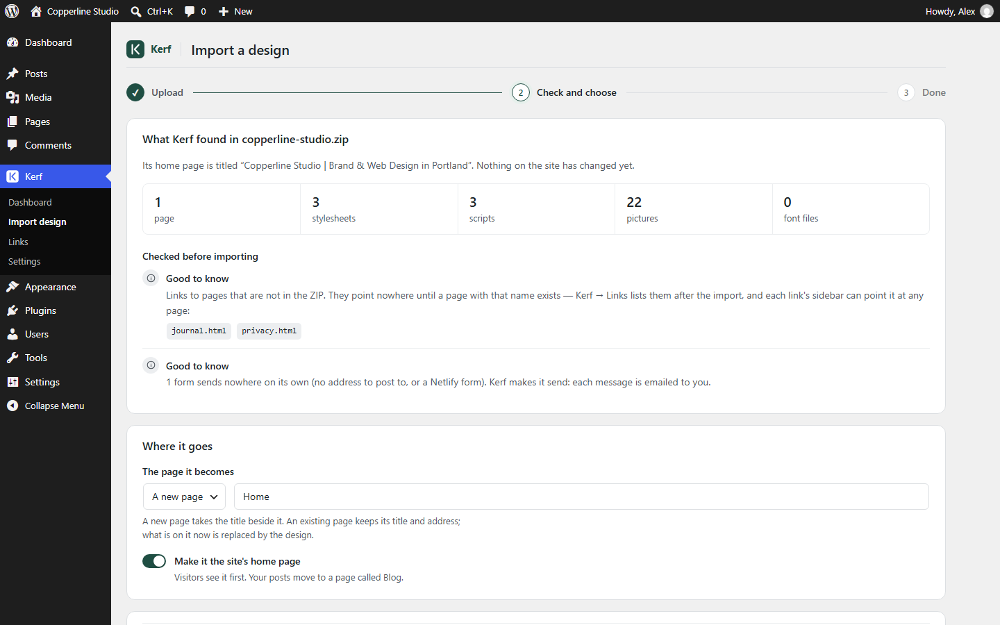
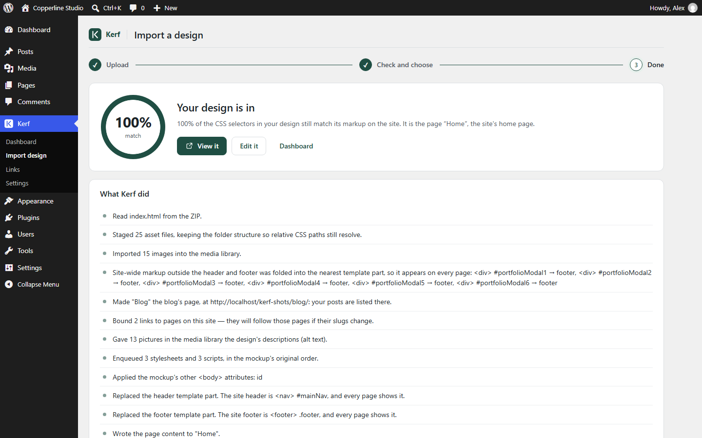

How to Turn an AI-Generated HTML Website into a WordPress Site in One Click (Without Elementor or Rebuilding)
Building a custom website used to take three weeks of wireframing. Today, you can open Claude, ChatGPT, Gemini, or Google Stitch, describe your business, and get back a genuinely great multi-page website in twenty minutes—complete with custom typography, responsive CSS Grid layouts, smooth scroll animations, and interactive scripts.
And then comes the moment every founder, freelancer, and agency hits the wall: “How do I put this on WordPress so my team or client can actually edit it?”
Until now, every answer to that question was painful. In this guide, we’ll compare the traditional ways people bring HTML into WordPress—and walk through how Kerf imports an AI tool's or a designer's HTML ZIP into a real, editable WordPress site in one click. (Not yet: React apps that need a build step, such as Lovable, Bolt or v0 — Kerf's check tells you before anything changes.)
Why the 3 Traditional Ways Break Your AI Design
When you download a .zip folder of HTML, CSS, and JavaScript from an AI tool, you have a finished front-end design. Look at what happens when you try to move it into WordPress the old-fashioned way:
| Approach | Time Required | What Happens to Your Design |
|---|---|---|
| 1. Rebuild by hand in Elementor / Divi | 1–3 days per site | You recreate every section by eye inside a proprietary widget tree. Spacing shifts, custom CSS animations disappear, the page fills with the builder's wrappers, and you pay an annual plugin subscription forever. |
| 2. Convert to core Gutenberg blocks | 4–8 hours of fixing CSS | Standard block converters normalize your markup—wrapping tables in <figure class="wp-block-table"> and replacing your <nav> with wp_nav_menu(). Suddenly stylesheet selectors written for your original markup stop matching. |
| 3. Hand-code a custom PHP theme | Days of PHP, or a developer's bill | Splitting header.php, footer.php, functions.php, and registering editable fields in ACF works—but the moment you want to edit a section visually, you’re back in code. |
The Root Cause
The usual HTML-to-WordPress routes convert your design into their own widget or block vocabulary. Every wrapper element or renamed class is a markup decision your designer didn’t make—and the cost shows up as CSS that quietly breaks.
How Kerf Imports HTML into WordPress Without Rewriting Your Markup
We built Kerf around a simple rule: the mockup is the design, and the theme’s job is to get out of its way. Instead of forcing your HTML into opinionated widgets, Kerf is a WordPress full-site-editing theme with a deterministic DOM converter and asset pipeline built inside.
Here is the entire workflow from AI ZIP to live WordPress site:
Step 1: Drop Your ZIP into Kerf → Import Design
In your WordPress admin, open Kerf → Import design and drag in your ZIP archive (or paste a single page’s HTML). Kerf runs a pre-flight check before touching your site—counting your pages, stylesheets, scripts, and images, and flagging any missing files up front.

Step 2: Click Import and Check the Match
In a single pass (a few seconds for a design like our sample), Kerf:
- Stages your asset folders (
css/,js/,fonts/,images/) keeping the folder hierarchy intact so relativeurl(../images/...)paths in CSS resolve without rewriting. - Imports content images into the WordPress Media Library so you can swap any photo in the editor while keeping responsive
srcsetsupport. - Registers stylesheets and scripts in exact source order through WordPress’s dependency graph.
- Splits
<header>,<main>, and<footer>into shared FSE template parts and editable pages. - Audits every CSS selector in your stylesheets against the rendered WordPress DOM and prints your fidelity report.

Step 3: Edit Words, Pictures, Menus, and Forms in Place
Open the imported page in the WordPress Block Editor and you’ll see your actual design—with your stylesheets loaded inside the canvas, scroll-hidden sections automatically revealed for editing, and every HTML tag and class named clearly in List View.
- Click any text or image to edit it in place.
- Open the Menu panel to rename, reorder, or re-link navigation items without losing your
<nav>markup. - Select any
<form>—it already sends emails and saves entries under Kerf → Form entries automatically.
Test It Right Now in Your Browser (No Sign-Up)
You don’t have to take our word for it—or even spin up a WordPress server to test your own ZIP. Click Try it free in your browser to launch a private WordPress Playground with Kerf pre-installed, and drop in either our sample Copperline Studio ZIP or your own AI-made website.
Try Kerf with your own design in your browser
Test a live WordPress with Kerf pre-installed in WordPress Playground, or unlock lifetime updates from $49 one-time.
More from the Kerf blog
Google Stitch to WordPress: How to Turn a Stitch Design into an Editable WordPress Site
Google Stitch designs good-looking screens and exports them as HTML with Tailwind CSS. Here is how to put those screens on WordPress as real, editable pages—without rebuilding them in a page builder.
Read article →
Lovable, Bolt or v0 Site to WordPress? An Honest Guide to What Works Today
Lovable, Bolt and v0 build React apps, and the page only exists after their build runs. Here are your real options for getting one onto WordPress—including when an HTML importer like Kerf can’t help yet.
Read article →Your AI-Made Website’s Contact Form Doesn’t Send? How to Make It Work on WordPress
The contact form in an AI-generated HTML site looks finished but posts nowhere. Here is why, the usual fixes, and how Kerf makes the same form email you and save every message in WordPress—keeping its design.
Read article →